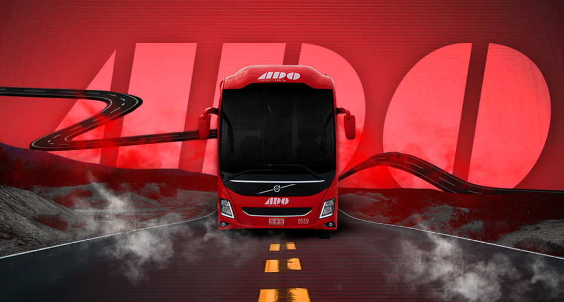
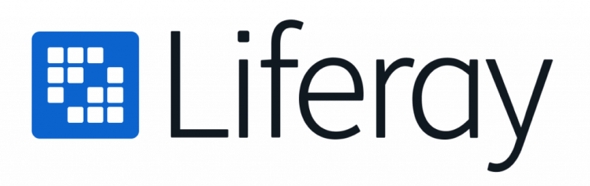
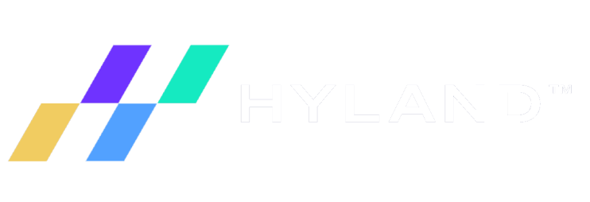
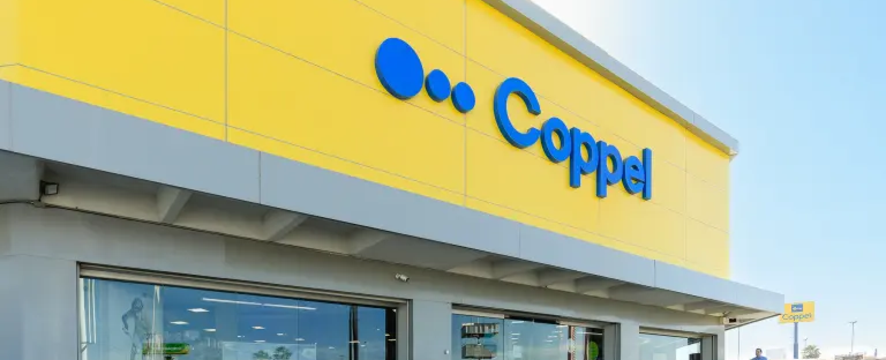
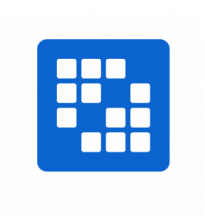
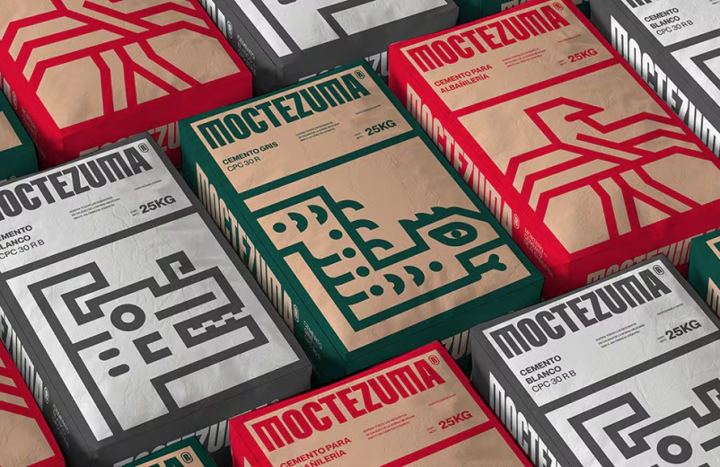
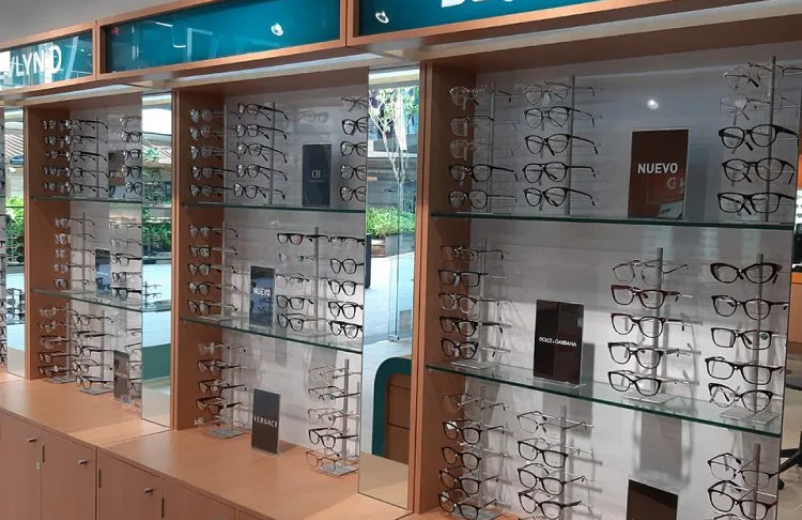

TELMEX

ADO
Grupo Posadas
Banco Multiva
Partners de Servicios
Partners de Nube

Liferay
Plataforma DXP que crea portales empresariales, intranets y
sitios B2B personalizados por roles. Unifica contenido, datos y
aplicaciones heredadas en experiencias omnicanal desde una
arquitectura modular escalable.

Hyland
Plataforma ECM que centraliza y automatiza documentos con IA,
gestionando el ciclo de vida completo con trazabilidad total.
Incluye BPM para flujos de trabajo y cumplimiento normativo DoD
5015.02 y Ley General de Archivos.
AWS
GCP
Alibaba
Plataformas seguras y personalizadas para usuarios, clientes y
entidades financieras
Con
Liferay
, habilitamos portales digitales que centralizan el acceso a la
información crediticia, permitiendo a usuarios finales,
instituciones financieras y entidades reguladoras consultar datos,
generar reportes y gestionar solicitudes de forma segura y
trazable.
Su arquitectura flexible facilita la integración con sistemas internos y externos, el control de permisos por rol, la atención a consultas y reclamaciones, así como la entrega de servicios 100% digitales y personalizados.
Su arquitectura flexible facilita la integración con sistemas internos y externos, el control de permisos por rol, la atención a consultas y reclamaciones, así como la entrega de servicios 100% digitales y personalizados.
Control total sobre expedientes digitales y cumplimiento
regulatorio
Las SIC manejan un volumen masivo de documentos: reportes de
crédito, registros de reclamación, comunicaciones con usuarios,
auditorías y más. Con
Hyland
, automatizamos la captura, clasificación y resguardo de esta
información, garantizando integridad, trazabilidad y
disponibilidad conforme a los requerimientos de la CNBV y la
SHCP.
Su integración con plataformas de analítica y gestión de riesgos permite convertir los documentos en datos valiosos para la toma de decisiones.
Su integración con plataformas de analítica y gestión de riesgos permite convertir los documentos en datos valiosos para la toma de decisiones.

Coppel requería una solución que no solo resolviera las
restricciones técnicas inmediatas, sino que
garantizara escalabilidad sin límites para sostener su expansión
multi-país
. Los principales desafíos incluían:
limitaciones críticas de Community Edition
sin capacidades enterprise de clustering, alta disponibilidad ni
soporte técnico garantizado;
más de 150 terabytes de información crítica
distribuidos en tres áreas estratégicas (Legal, Diseño y Comercial)
operando con tecnología sin certificación enterprise;
imposibilidad de integración robusta
con sistemas core/legacy que sostienen procesos críticos de negocio;
falta de soporte profesional
sin acceso a service packs, hot fixes ni consultoría especializada;
y
riesgos de continuidad operativa
sin capacidades de failover automático ni arquitecturas de alta
disponibilidad.
En un sector tan competitivo, Coppel necesitaba una base tecnológica que creciera y evolucionara junto con la empresa , soportando terabytes adicionales año tras año sin comprometer rendimiento, disponibilidad ni seguridad de información sensible.
En un sector tan competitivo, Coppel necesitaba una base tecnológica que creciera y evolucionara junto con la empresa , soportando terabytes adicionales año tras año sin comprometer rendimiento, disponibilidad ni seguridad de información sensible.
Propuesta
¿Cómo lo haríamos?
GlobalQuark propuso una estrategia de transformación enterprise
escalonada basada en Alfresco Enterprise Edition
, donde cada migración desbloquearía capacidades críticas
mientras se garantizaba cero disrupción en operaciones de negocio.
La propuesta no se limitó a una actualización técnica puntual,
sino a establecer
una alianza estratégica de largo plazo que alineara la evolución
tecnológica de Alfresco con el crecimiento institucional de
Coppel.
- Migración estratégica de Community a Enterprise Edition en proceso evolutivo de tres fases que desbloqueó capacidades enterprise progresivamente, acompañando cada etapa de expansión de Coppel.
- Arquitectura enterprise de alta disponibilidad con clustering automático, balanceo de carga y failover para soportar operaciones 24/7 sin puntos únicos de falla.
- Alineación continua roadmap tecnológico-negocio , donde cada nueva capacidad de Alfresco Enterprise se tradujo en valor inmediato para las necesidades emergentes de las áreas Legal, Diseño y Comercial.
- Ecosistema ECM unificado para gestión de contratos, assets digitales y documentación fiscal, con capacidad de sumar nuevos proyectos continuamente.
- Integración profunda con sistemas core/legacy para conexión bidireccional con aplicaciones críticas que sostienen procesos transaccionales del retail.
- Stack tecnológico enterprise ampliado con soporte para bases de datos corporativas (Oracle DB, MS SQL Server) y servidores de aplicaciones empresariales.
- Soporte global de clase mundial con service packs regulares, hot fixes prioritarios y acceso a consultoría especializada de Alfresco y GlobalQuark.
Solución
¿Qué hicimos?
El equipo de GlobalQuark desarrolló e implementó una transformación
integral del ecosistema de gestión documental de Coppel durante 11
años de colaboración continua, utilizando Alfresco Enterprise Edition
como columna vertebral de su infraestructura ECM, con una visión de
evolución sostenida.
GlobalQuark implementó una evolución tecnológica integral basada en Alfresco ECM Enterprise, enfocada en crear un ecosistema de gestión documental robusto, escalable y enterprise-grade que evolucionara con el cliente para ofrecer capacidades superiores acordes a sus necesidades de crecimiento. Se ejecutaron tres migraciones enterprise consecutivas, se diseñaron arquitecturas de alta disponibilidad, se integraron sistemas core/legacy críticos, se habilitaron capacidades avanzadas de clustering y performance, y se entregó una solución con soporte garantizado, seguridad financiera y actualización continua para autonomía operativa.
Ecosistema unificado que crece continuamente:
GlobalQuark implementó una evolución tecnológica integral basada en Alfresco ECM Enterprise, enfocada en crear un ecosistema de gestión documental robusto, escalable y enterprise-grade que evolucionara con el cliente para ofrecer capacidades superiores acordes a sus necesidades de crecimiento. Se ejecutaron tres migraciones enterprise consecutivas, se diseñaron arquitecturas de alta disponibilidad, se integraron sistemas core/legacy críticos, se habilitaron capacidades avanzadas de clustering y performance, y se entregó una solución con soporte garantizado, seguridad financiera y actualización continua para autonomía operativa.
Proyecto 1 - Área Legal (40+ terabytes):
Coppel consolidó su primera migración enterprise implementando
el repositorio de
contratos con clientes y proveedores
, documentación legal corporativa con versionamiento automático
e
integración bidireccional con sistemas core
de gestión comercial.
Proyecto 2 - Diseño (60 terabytes):
Repositorio especializado en
assets digitales de alta resolución
, almacenando arte, fotografías y especificaciones técnicas de
todos los productos comercializados en México, Argentina y
Brasil.
Proyecto 3 - Comercial (50 terabytes):
Plataforma fiscal y transaccional almacenando
facturas electrónicas de todas las tiendas
, con cumplimiento SAT y disponibilidad inmediata para
auditorías regulatorias.
- Clustering automático y alta disponibilidad con múltiples nodos activos, failover transparente y balanceo inteligente de carga.
-
Transformaciones de alto rendimiento
optimizadas para procesamiento de imágenes y conversión de
formatos sobre repositorios multi-terabyte.
Integraciones robustas conectando Alfresco directamente con sistemas core/legacy, CRM, ERP y aplicaciones transaccionales críticas. - Stack tecnológico enterprise con soporte para Oracle DB, MS SQL Server, JBoss, WebLogic y WebSphere según necesidades arquitectónicas.
- Administración avanzada vía JMX con monitoreo proactivo, métricas de performance y alertas automáticas.
- Service packs y hot fixes regulares garantizando actualizaciones continuas sin disrupción de servicios productivos.
Impacto
¿A quiénes les favorece?
La implementación de
Alfresco Enterprise Edition
con el acompañamiento estratégico de GlobalQuark durante 11 años
continuos transformó radicalmente el ecosistema de gestión
documental de Coppel, estableciendo una
relación simbiótica donde cada avance de Alfresco impulsó el
crecimiento de Coppel y viceversa:

- 11 años de colaboración continua ininterrumpida: Relación estratégica de largo plazo que consolidó a GlobalQuark como socio tecnológico de confianza.
- Evolución sostenida de 40TB a 150TB+: Cada proyecto enterprise desbloqueó nuevas capacidades que se alinear perfectamente con las necesidades emergentes de Coppel, permitiendo crecer sin cambiar de tecnología.
- 3 proyectos enterprise implementados exitosamente (Legal, Diseño, Comercial) manteniendo rendimiento óptimo y disponibilidad 99.9%.
- Reducción del 70% en tiempos de acceso a documentación crítica gracias a arquitecturas optimizadas y clustering enterprise.
- Disponibilidad 24/7 garantizada con clustering, failover automático y eliminación de puntos únicos de falla.
- 100% integración con sistemas core/legacy permitiendo flujos transaccionales automatizados en procesos sustantivos del negocio.
- Cero pérdida de información en 11 años de operación continua con más de 150 terabytes de documentación sensible.
- Explotación máxima de la plataforma: Coppel aprovechó todas las capacidades enterprise de Alfresco y continúa expandiendo su ecosistema ECM hacia nuevas áreas estratégicas. Unificación de más de 30 portales en una plataforma centralizada.
Visión de futuro: Con la base sólida de Alfresco Enterprise, Coppel
está preparado para adoptar Alfresco Process Services (BPM) para
automatización avanzada de flujos documentales e Hyland Intelligent
Document Processing (IDP) para extracción inteligente de datos con IA.
"GlobalQuark ha sido nuestro socio tecnológico estratégico durante 11
años continuos. La migración de Community a Enterprise Edition
transformó completamente nuestras capacidades de gestión documental,
permitiéndonos escalar de 40 a más de 150 terabytes sin comprometer
rendimiento ni disponibilidad. Hoy Alfresco es parte integral de
nuestros procesos sustantivos."
— Dirección de Tecnología, Coppel
Conclusión
¿Qué logramos?
Gracias a la experiencia de
GlobalQuark
y la potencia de
Alfresco Enterprise Edition
, Coppel logró una transformación digital profunda y sostenible
durante
más de una década, donde el roadmap de producto de Alfresco se
alineó perfectamente con la evolución institucional de Coppel
. La nueva plataforma no solo resolvió las restricciones críticas
de Community Edition, sino que sentó las bases para un ecosistema
ECM enterprise que crece, se adapta y evoluciona al mismo ritmo
que el negocio. Este caso demuestra cómo una ejecución estratégica
de largo plazo, respaldada por tecnología enterprise que
evoluciona con el cliente y consultoría especializada, puede
convertir la complejidad en ventaja competitiva sostenible.
Visión de largo plazo
Elegir una plataforma enterprise desde el inicio evita
restricciones técnicas que se convierten en cuellos de botella
estratégicos, garantizando escalabilidad sin límites y ROI
sostenido.
Evolución tecnológica alineada
La capacidad de alinear el roadmap de Alfresco Enterprise con la
evolución digital del cliente permite ofrecer capacidades
superiores acordes a necesidades cambiantes, sumando valor
continuamente durante más de una década.
Propuesta
¿Cómo lo haríamos?
GlobalQuark propuso una solución integral sobre la plataforma
Liferay
, diseñada para mejorar la experiencia del colaborador, unificar
la información y fortalecer la productividad en solo cuatro meses
de ejecución. El enfoque priorizó la simplicidad, la autogestión y
la integración ágil con el ecosistema tecnológico existente.
- Plataforma web moderna y responsiva , accesible desde cualquier dispositivo y pensada para facilitar la experiencia de uso.
- Autenticación única (SSO) con Microsoft 365 , para consolidar accesos.
- Interfaz intuitiva , con navegación estructurada en máximo tres clics.
- Módulos especializados para gestión de políticas, buzón de sugerencias, directorio interno y capacitación.
- Desarrollo ágil con sprints de 15 días, retroalimentación continua y pruebas piloto para asegurar la adopción desde el inicio.
Solución
¿Qué hicimos?
La nueva
intranet
fue concebida como un espacio central de colaboración, comunicación
y capacitación, impulsando la eficiencia operativa y reforzando la
cultura organizacional.
- Estructura multisitio y diseño responsivo , adaptable a cada área y comité, accesible desde desktop y móviles.
- Repositorio centralizado , con políticas, manuales y organigramas organizados por permisos y control de versiones.
- Academy corporativo , con 12 cursos iniciales y seguimiento automatizado de certificaciones internas.
- Integración con WebEx , habilitando comunicación directa, gestión de reuniones y agenda de eventos desde la misma plataforma.
INTRANETS COLABORATIVAS CON LIFERAY DXP
Transforma tu comunicación interna con una intranet que conecta,
empodera y evoluciona con tu organización.
P
ROBLEMÁTICA
El desafío de las organizaciones modernas
Las empresas con múltiples sedes, equipos distribuidos o crecimiento
acelerado enfrentan retos críticos que afectan directamente su
productividad y cultura organizacional:
Información dispersa y difícil de localizar
Documentos, políticas y procesos fragmentados entre correos,
carpetas compartidas y sistemas desconectados. El tiempo
promedio para encontrar información crítica supera los 10
minutos por búsqueda.
Múltiples credenciales y accesos fragmentados
Colaboradores gestionando 5-8 contraseñas diferentes para
acceder a sistemas internos, generando fricción digital,
riesgos de seguridad y dependencia del área de TI.
Estadística clave
El 70% de los colaboradores
pierde hasta 2 horas diarias buscando información o esperando
respuestas que ya existen en la organización.
P
ROPUESTA DE VALOR
La intranet inteligente que tu organización necesita
En
GlobalQuark
, diseñamos e implementamos
intranets colaborativas sobre Liferay DXP
, la plataforma líder en experiencia digital empresarial. No se
trata solo de un sitio interno: es el
sistema nervioso digital
de tu organización, donde convergen personas, procesos,
información y cultura en un entorno seguro, intuitivo y
escalable.
Nuestra propuesta va más allá de la tecnología. Combinamos 18 años de experiencia en consultoría estratégica, arquitectura de información y gestión del cambio para asegurar que tu intranet sea adoptada desde el primer día, evolucione con tu negocio y genere resultados medibles en eficiencia, colaboración y satisfacción del colaborador.
Con Liferay DXP , construimos espacios digitales personalizados por rol, departamento o ubicación, integrando tus sistemas existentes (ERP, CRM, RRHH, SharePoint, Microsoft 365) en una experiencia unificada. Desde la gestión documental hasta la automatización de flujos internos, tu intranet se convierte en el motor de productividad que impulsa tu transformación digital.
Nuestra propuesta va más allá de la tecnología. Combinamos 18 años de experiencia en consultoría estratégica, arquitectura de información y gestión del cambio para asegurar que tu intranet sea adoptada desde el primer día, evolucione con tu negocio y genere resultados medibles en eficiencia, colaboración y satisfacción del colaborador.
Con Liferay DXP , construimos espacios digitales personalizados por rol, departamento o ubicación, integrando tus sistemas existentes (ERP, CRM, RRHH, SharePoint, Microsoft 365) en una experiencia unificada. Desde la gestión documental hasta la automatización de flujos internos, tu intranet se convierte en el motor de productividad que impulsa tu transformación digital.
Beneficios
clave
Acceso unificado con Single Sign-On (SSO)
Una sola credencial para todos tus sistemas internos. Mejora la
seguridad, reduce fricción digital y elimina solicitudes de
soporte por contraseñas olvidadas.
Gestión inteligente del conocimiento
Documenta procesos, políticas y buenas prácticas con estructura,
control de versiones y buscador avanzado. Encuentra cualquier
información en menos de 3 clics.
Colaboración en tiempo real
Espacios de trabajo por proyecto, equipos o iniciativas.
Comparte archivos, comenta, aprueba y mantén toda la
conversación en contexto, sin perder información en correos.
Comunicación estratégica y medible
Publica noticias, campañas, eventos y reconocimientos con
segmentación por audiencia. Mide engagement, clics y alcance
para optimizar tu estrategia de comunicación interna.
Seguridad y cumplimiento normativo
Control granular de permisos, auditoría completa de accesos,
cifrado empresarial y arquitectura que cumple con ISO 27001,
GDPR y regulaciones financieras mexicanas.
Autogestión sin dependencia de TI
Editores visuales intuitivos que permiten a cada área actualizar
su contenido, publicar avisos y gestionar su espacio sin
necesidad de desarrollo o tickets de soporte.
¿Por qué GlobalQuark + Liferay?

Únicos Partner Platinum de Liferay en México
con acceso a soporte directo, actualizaciones exclusivas y
certificaciones avanzadas
C ARACTERÍSTICAS/C
APACIDADES
Todo lo que tu intranet puede hacer
C ARACTERÍSTICAS/C
APACIDADES
Todo lo que tu plataforma B2B puede hacer
G
ESTIÓN DE CATÁLOGOS Y PRODUCTOS
Catálogos personalizados por cliente
Crea catálogos específicos con productos, precios y términos
diferenciados por segmento, distribuidor o región. Cada
comprador ve solo lo relevante para su relación comercial.
Búsqueda y navegación inteligente Filtros avanzados por categoría, marca, atributos técnicos o especificaciones.
Búsqueda de texto completo con sugerencias automáticas y productos relacionados.
Gestión de variantes y SKUs complejos Maneja productos con múltiples variantes (tamaño, color, presentación) desde una misma ficha. Inventarios independientes y precios diferenciados por variante.
Información técnica enriquecida Fichas de producto con especificaciones detalladas, documentación técnica, certificaciones, fichas de seguridad y contenido multimedia (imágenes, videos, modelos 3D).
Búsqueda y navegación inteligente Filtros avanzados por categoría, marca, atributos técnicos o especificaciones.
Búsqueda de texto completo con sugerencias automáticas y productos relacionados.
Gestión de variantes y SKUs complejos Maneja productos con múltiples variantes (tamaño, color, presentación) desde una misma ficha. Inventarios independientes y precios diferenciados por variante.
Información técnica enriquecida Fichas de producto con especificaciones detalladas, documentación técnica, certificaciones, fichas de seguridad y contenido multimedia (imágenes, videos, modelos 3D).
C ASOS DE USO/I
NDUSTRIAS
Intranets que transforman industrias
Servicios Financieros
Centraliza políticas de cumplimiento, actualizaciones
regulatorias y comunicación de riesgos en un entorno seguro y
auditable.

Manufactura y Producción
Conecta plantas remotas, estandariza procesos de calidad y
fortalece la cultura de seguridad en toda la operación.

Retail
Unifica cientos de sucursales con comunicación instantánea,
materiales de capacitación y acceso a sistemas corporativos
desde cualquier punto de venta.
P ROCESO/M
ETODOLOGÍA
De la estrategia a la adopción en 90 días con nuestra
metodología.
DISCOVERY Y ESTRATEGIA
(Semana 1-2)
Levantamiento de necesidades, definición de audiencias,
arquitectura de información y casos de uso prioritarios.
Entregable: Roadmap de implementación.
DISEÑO Y PROTOTIPADO
(Semana 3-4)
Wireframes, diseño UI adaptado a tu marca, prototipo navegable y
validación con usuarios clave. Entregable: Diseño aprobado y
listo para desarrollo.
DESARROLLO E INTEGRACIÓN
(Semana 5-10)
Construcción de la intranet sobre Liferay DXP, integración con
sistemas existentes, configuración de SSO y migración de
contenidos críticos. Entregable: Ambiente de pruebas funcional.
CAPACITACIÓN Y PRUEBAS
(Semana 11-12)
Entrenamiento a editores de contenido, administradores y
usuarios piloto. Pruebas de carga, seguridad y ajustes finales.
Entregable: Equipo autónomo y plataforma certificada.
LANZAMIENTO Y SOPORTE
(Semana 13+)
Go-live con estrategia de comunicación interna, monitoreo de
adopción, soporte técnico 12/7 y roadmap de evolución continua.
Entregable: Intranet operando al 100%.
B
ENEFICIOS TANGIBLES
Impacto medible en eficiencia y control
75% de reducción
en tiempo dedicado a buscar y solicitar acceso a documentos
críticos
90% menos correos
con archivos adjuntos al centralizar contenido en repositorio
colaborativo
100% de trazabilidad
documental con auditoría completa de accesos, cambios y
aprobaciones
4 meses promedio
de retorno de inversión mediante ahorros en almacenamiento,
productividad y cumplimiento
B
ENEFICIOS TANGIBLES
El valor medible de la gobernanza
80% de reducción
en costos de descubrimiento electrónico al tener información
clasificada, indexada y accesible
100% de cumplimiento
regulatorio con aplicación automática de retenciones y
auditoría inmutable de disposiciones
60% menos almacenamiento
mediante eliminación responsable de contenido que cumplió
vigencias sin valor permanente
Cero sanciones
por incumplimiento de retenciones o destrucciones prematuras
desde implementación
B
ENEFICIOS TANGIBLES
Resultados que transforman tu operación
85% de reducción
en tiempos de búsqueda de información crítica (de 10+ minutos a
menos de 2 minutos)
65% menos correos internos
al consolidar comunicación, procesos y documentación en una
plataforma centralizada
70% más rápido
el proceso de inducción de nuevos colaboradores con materiales
digitales y autoservicio
100% de adopción
en el primer trimestre gracias a SSO, interfaz intuitiva y
capacitación práctica incluida